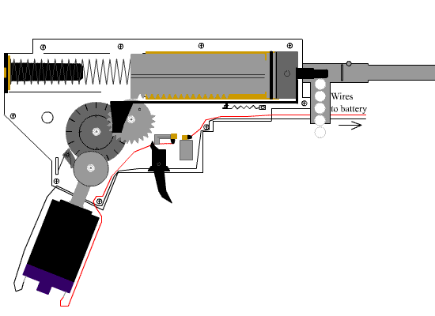

Страйкбол або Airsoft - що це таке?

Страйкбол (англ. airsoft) — командна гра, у якій «бій» ведеться 6 мм кульками типу BB (вагою від 0,12 до 0,43 г) з точних копій бойової зброї. Відмінною рисою гри є чесність. Адже влучення від 6 мм кульки не залишають слідів на камуфляжі й захисних окулярах (які обов'язкові в цьому виді спорту) — «повідомлення» про влучення у ділянку тіла цілком на совісті гравців. Так, деякі можуть і не повідомити про влучення — їх називають «МакЛаудами» (ті, котрих не можливо вбити).
Історія
Історія появи цього спорту сягає своїми коренями до післявоєнної Японії, якій, після її капітуляції заборонили мати збройні сили (крім сил самооборони), і уряд цієї країни знайшов цікавий вихід зі сформованої ситуації — були створені точні пневматичні копії бойової зброї, які збігалися по вазі з реальними прототипами, мали таку ж скорострільність, і навіть мали схожу схему збірки. Патрони в цій зброї заміняли 6 мм кулі, виготовлені з легкого пластику.
Згодом це заняття переросло у вид дозвілля, що набув величезної популярності у всьому світі, завдяки його особливій реалістичності, і наближеності до реальних бойових дій (англ. Military Simulation Training and Education).
Елементи гри
Місця проведення та легенди
Ігри проводяться по заздалегідь обговорених сценаріях, які додають ще більшої реалістичності самій грі. Прикладом таких сценаріїв є захист блокпосту, або напад на нарколабораторію, коли на території твоїх дій ще є група партизанів.
Зброя
Основними виробниками страйкбольної зброї є фірми, які розміщені на історичній батьківщині цього спорту — у Японії, хоча, на ринку представлені й продукти Китайських і Корейських виробників. Безумовним лідером у виробництві страйкбольної зброї є японська фірма «Tokio Marui», що у страйкбольних колах вважається «законодавцем моди».
Зброя виготовляється, як правило з ударотримкого ABS пластику (у деяких випадках використовується метал, наприклад виробництва Classic Army, ICS), обладнано здебільшого системою HOP-UP (яка підкручує кульку, у момент вильоту зі ствола, що дозволяє досягти більшої стабільності польоту на великі відстані) і латунним або мідним стволами з відполірованим внутрішнім каналом. У стандартні магазини до зброї, «входить» близько 50-80 BB кульок (для автоматів), або 12-25 (для пістолетів). Так само існують бункерні магазини, об'єм яких становить від 200 до 600 BB кульок.
Електропневматика
Цей тип зброї найпоширеніший в страйкболі. У середовищі страйкболістів називається «привід», ЕПО (електропневматичне зброя), AEG (англ. airsoft electric gun). Принцип дії аналогічний з «Воздушкою» з одним винятком: підпружинений поршень зводиться не за допомогою мускульної сили стрільця, а за допомогою електродвигуна з редуктором (гірбокса — gearbox). Це дозволяє створювати зразки зброї, що мають режим автоматичної стрільби. Скорострільність становить 500—1000 пострілів за хвилину. Електроживлення двигуна здійснюється за допомогою акумуляторних батарей напругою від 7,2 вольт і вище. Проте звук пострілу нереалістичний: крім неголосного хлопку зазвичай чути вереск електродвигуна і редуктора. Звук працюючого приводу більше схожий на звук швейної машинки.
Страйкбол в Україні
Федерація страйкболу України як громадська організація виникла у 2002 р. В цей час страйкбол в Україні лише починав розвиватися і робив свої перші кроки. Гравців було дуже мало, загалом по Україні налічувалося до 100 чоловік. На той час центральні осередки зосереджувалися у двох містах: Львові та Києві.
Перша назва організації — «Західноукраїнська федерація страйкболу» — ЗУФС. Згодом, по мірі появи гравців у інших регіонах України, засновники прийняли рішення відійти від територіальної назви і перереєструвати ГО під назвою «Федерація Страйкболу». Цим самим надавши можливість долучатися до формування засад та принципів гри всім регіонам країни.
У 2003 р. тоді ще ЗУФС організувала та провела першу Всеукраїнську гру «Відкриття сезону» на яку приїхало 36 гравців з усієї України. Через рік було вже 120 (2004 р.), у 2005 році — 270, у 2006 році на полігоні Раківець зібралося вже понад 500 чоловік.
На сьогодні Федерація Страйкболу є найстарішою з офіційних організацій, що пропагують страйкбол в Україні.